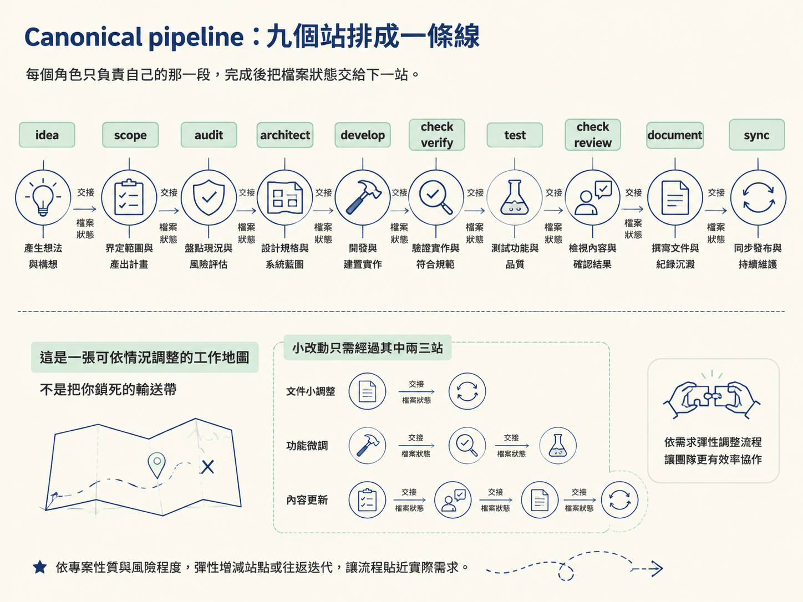
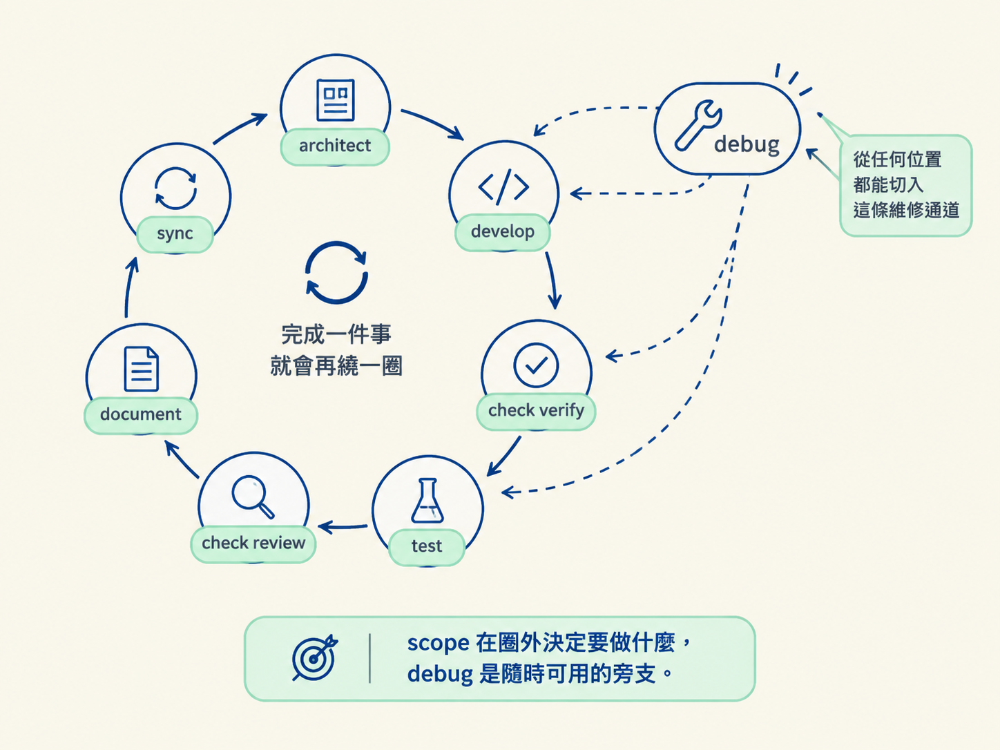
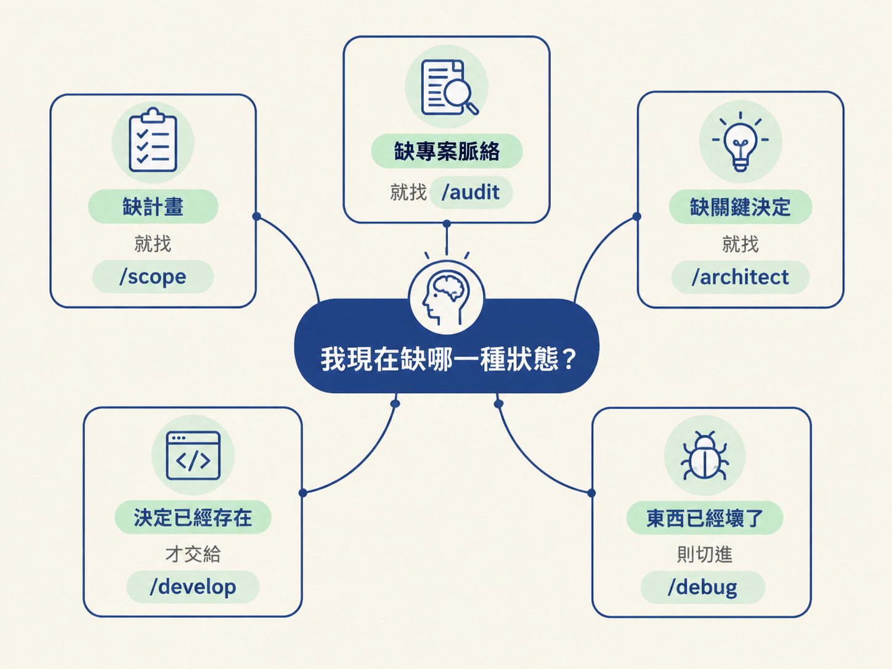

你可能只是想修一個「登入有時候會壞掉」的問題，或手上有一個還很模糊的產品想法。打開 agent 後，游標在輸入框閃著，卻不知道第一句該輸入什麼。
scope、audit、architect、develop……這些 skill 看起來都像可以直接執行的動詞。真正困難的地方，是判斷「現在的處境，該叫哪一個」。
這一節先不急著操作，先把地圖攤開。這套系統有九個 skill，它們是同一條生產線上彼此交接的工作站，不是九個各做各的工具。看懂每一站負責什麼，下一步才知道該把哪個決定交給哪個 skill。
這套 Agent Skills 的目標，是把一個改動從「模糊的想法」帶到「已上線、驗證過，而且文件齊全的程式碼」。關鍵是狀態放在檔案裡，不是放在對話裡，跟哪一個 skill 特別聰明無關。
這裡的狀態包括：
狀態寫進檔案後，工作就能跨 session 接續，也能讓團隊共用。你關掉對話、隔天重新開啟，agent 讀的是磁碟上的進度，而不是昨天那段可能已經找不到的聊天紀錄。
所以可以「一個階段交給一個 skill」。每一站都在讀檔、做事、改檔，交接靠的是檔案，不是靠某個人記得上一段對話。
官方把主線寫成下面這串箭頭，從一個想法一路走到同步收尾：
idea → /scope → /audit → /architect → /develop → /check verify → /test → /check review → /document → /sync這條線要記住的重點是：一個階段一個 skill，只跑這次改動需要的那些，順序可以依情況調整。不必每次都從頭跑到尾。
它比較像一張工作地圖，而不是把你鎖死的輸送帶。小改動可能只需要兩三站；遇到 bug 時，也可能直接切進 /debug。地圖提供的是前後關係，真正要走哪些站，取決於這次改動的狀態。
可以把它想成餐廳後場：
/scope 決定要做哪道菜。/audit 把廚房規範與動線寫清楚。/architect 定案這道菜的作法。/develop 實際下廚。/check verify 真的試吃成品。/test 把作法整理成可重複的標準食譜。/check review 請另一位主廚再檢查一次。/document 寫出給人看的菜單說明。/sync 更新廚房裡的公告，讓它符合現在的狀態。每個角色只負責自己的那一段，完成後把檔案狀態交給下一站。

下面這張表是後續導航判斷的底圖：先看它負責什麼，再看什麼情況適合叫它。
| Skill | 它負責什麼 | 什麼時候跑 |
|---|---|---|
/scope | 把產品想法變成一張活著、粗略的計畫，並隨著出貨保持更新。 | 要開始新產品，或規劃下一個切片。Greenfield 先跑；brownfield 先盤點既有，再規劃新工作。 |
/audit | 寫出 AGENTS.md 這份情境檔，讓其他每個 skill 都讀得到專案的技術棧、指令與慣例。 | Brownfield 先跑；greenfield 在選好 stack、專案 scaffold 完再跑。 |
/architect | 跑一場深入的設計對話，把一個 load-bearing 決定寫成 build spec，放進 docs/specs/。 | 有一個關鍵選擇還沒定，例如 stack、資料模型、供應商或頁面設計；或 /develop 發現有個決定欠著。 |
/develop | 照 spec 把功能蓋出來，UI 或 backend 都行，跑 migration，推進 scope。 | 決定已經存在之後。若設計還欠著，它會把你轉回 /architect。 |
/check | 合併前確認改動。verify 跑真 app，review 用第二個模型讀程式碼。 | /check verify 在 /develop 之後；/check review 在開 PR 之前。 |
/test | 為剛改動的程式碼寫一套資深水準的測試，並記住你的框架選擇。 | 蓋完一個功能或修完一個 bug 之後。 |
/document | 從真實 diff 寫出給人看的文字：PR、changelog、release note、postmortem。 | 一個完成的改動需要被寫成文字時。 |
/sync | 把 AGENTS.md、scope 與 spec 狀態對齊到 repo 現在真正呈現的樣子。 | 合併前的最後一步。 |
/debug | 跑一套有紀律的根因迴圈，最後交一個 regression test 給 /test。 | 任何東西正在失敗、拋錯或行為不對時。隨時可用。 |
九個 skill 裡，有七個會組成反覆使用的 feature loop：
/architect → /develop → /check verify → /test → /check review → /document → /sync/scope 負責回答「要做什麼」；後面的 loop 則負責把一件已經決定的事做完並收尾。每增加一個功能，大致就會再繞這個圈一次。
/debug 不在這個圈上。它比較像旁邊的維修通道：只要東西失敗、拋錯或行為不對，就從任何位置切進去；沒有問題時，不需要特別跑它。

後半段的 verify、test、review、document，是建議的檢查尾巴，不是把你鎖死的軌道。你可以只跑 /develop 就收工，也可以把整段檢查都跑完。
這套設計唯一堅持的是：關鍵決定要被寫下來。至於這次改動需要多少驗證，則由你根據風險做判斷。小改動不必假裝成大型專案；重要改動也不能只靠對話裡的一句「應該可以」。
這套系統有九個 skill，一個階段一個，狀態放在檔案，不放對話。主線是scope → audit → architect → develop → check → test → document → sync，其中後七站會反覆形成 feature loop，而debug是隨時可用的旁支。它只要求你「跑這次改動需要的那些站」，不強迫你每次都跑完全程，也不強迫你跑完每一項檢查。
因此，選 skill 的依據是「我現在缺哪一種狀態」，「下一個步驟固定是什麼」在這裡不重要。缺計畫，就找 /scope；缺專案脈絡，就找 /audit；缺關鍵決定，就找 /architect；決定已經存在，才交給 /develop。如果東西已經壞了，則切進 /debug。

這張「誰站在哪一站」的地圖，會連到下一個觀念：如何把實際處境翻譯成正確的 skill。下一節會比較 greenfield、brownfield、monorepo 這些專案情境，說明它們為什麼有不同入口。